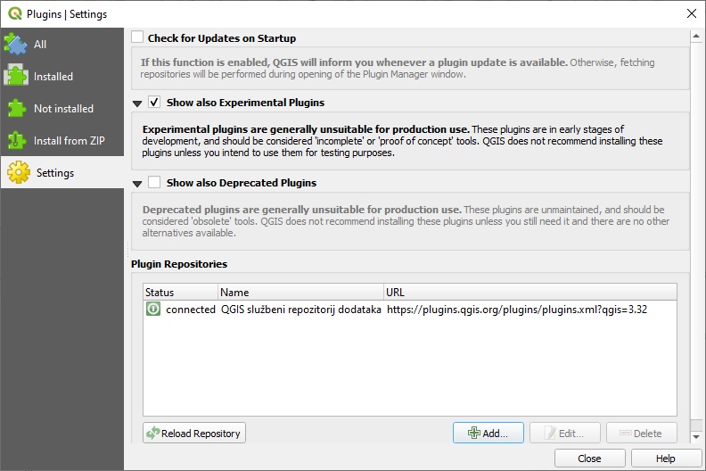

To begin using plugins, you need to know how to download, install and activate
them. To do this, you will learn how to use the Plugin Installer
and Plugin Manager.
The goal for this lesson: To understand and use QGIS’ plugin system.
To open the Plugin Manager, click on the menu item
Plugins ► Manage and Install Plugins.
In the dialog that opens, find the Processing plugin:
Click in the box next to this plugin and uncheck it to deactivate it.
Click Close.
Looking at the menu, you will notice that the Processing menu is
is now gone. This means that many of the processing functions you have been
using before have disappeared! For example look at the Vector
► and Raster ► menus. This is because they are part of
the Processing plugin, which needs to be activated to use them.
Open the Plugin Manager again and reactivate the
Processing plugin by clicking in the checkbox next to it.
Close the dialog.
The Processing menu and functions should be available again.
The list of plugins that you can activate and deactivate draws from the plugins
that you currently have installed. To install new plugins:
Select the Not Installed option in the Plugin Manager
dialog. The plugins available for you to install will be listed here.
This list will vary depending on your existing system setup.
Find information about the plugin by selecting it in the list
Install the one(s) you are interested in by clicking the Install
Plugin button below the plugin information panel.
Note
if the plugin has some error it will be listed in the Invalid
tab. You can then contact the plugin owner to fix the problem.
The plugins that are available to you for installation depend on which
plugin repositories you are configured to use.
QGIS plugins are stored online in repositories. By default, only the official
repository is active, meaning that you can only
access plugins that are published there. Given the diversity of available tools,
this repository should meet most of your needs.
It is possible, however, to try out more plugins than the default ones. First,
you want to configure additional repositories. To do this:
Open the Settings tab in the Plugin Manager dialog

Click Add to find and add a new repository.
Provide a Name and URL for the new repository you want to configure and make
sure the Enabled checkbox is selected.
You will now see the new plugin repo listed in the list of configured
Plugin Repositories
You can also select the option to display Experimental Plugins by selecting
the Show also experimental plugins checkbox.
If you now switch back to the Not Installed tab, you will see that
additional plugins are available for installation.
To install a plugin, click on it in the list and then on the
Install plugin button.